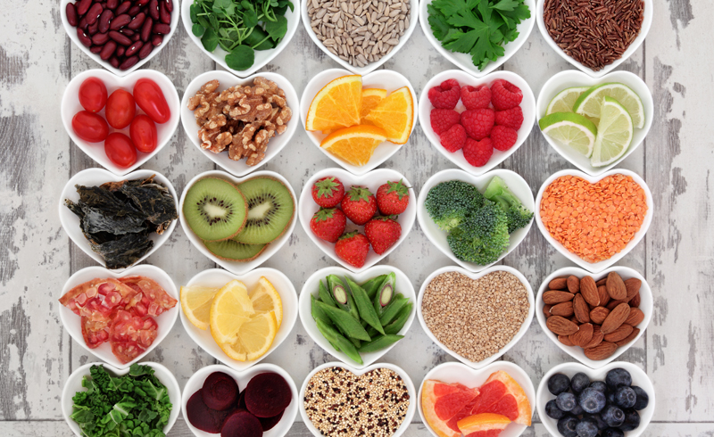

El poder curativo del AYUNO - Recuperando un camino olvidado hacia la salud  El ayuno es la abstinencia de todo alimento por un período definido de tiempo, durante el cual el cuerpo sólo se “alimenta” de agua y de sus propias reservas. Conviene recordar que el cuerpo no sólo necesita nutrientes sino que además nos alimentamos de los cuatro elementos de la natura leza: la tierra, el agua, el aire y el sol. Una persona sin comer puede sobrevivir varias semanas, sin beber varios días, sin respirar apenas unos minutos, si el sol no enviara su luz, energía y calor no podría mos sobrevivir ni el tiempo entre una inspiración y la espiración que le sigue. Aún cuando es de noche la otra mitad de la tierra está re cogiendo su luz, energía y calor. Cuando más sutil es el alimento menos tiempo podemos sobrevivir sin él.
AYUNO Y RESTRICCIÓN CALÓRICA Los órganos (hígado, riñón, páncreas, intestino, etc.) contienen sus propios relojes periféricos; ellos expresan varios genes a lo largo del día, siguiendo un ritmo circadiano para coordinar sus funciones específicas en el momento adecuado. De la misma forma que el primer estímulo lumínico sincroniza nuestro reloj maestro avisándole al organismo que es de día, el primer bocado que consumimos inicia la ventana de alimentación, por eso se llama des ayuno (nos saca del ayuno nocturno). Este estímulo sincroniza todos los relojes periféricos. Naturalmente estamos diseñados para alternar entre períodos de trabajo y descanso; lo mismo sucede con nuestros órganos. La última ingesta marca el momento del día donde comienza el ayuno diario: momento fundamental en el que suceden los procesos de detoxificación, reparación y rejuvenecimiento. La liberación natural de melatonina le indica al organismo que es momento de dormir, reduciendo la función de todos los órganos; está demostrado que consumir alimentos fuera de los horarios naturales interfiere con importantes procesos (como el control de la glucosa en sangre, por ejemplo), ya que lógicamente la termogénesis de los alimentos (su metabolización) es más eficiente durante el día: momento en el que el cuerpo necesita energía para funcionar. Lo contrario sucede a la noche. Respetar los ciclos de alimento-ayuno sincroniza nuestros relojes circadianos periféricos. Comer fuera de horario implica forzar nuestros órganos a trabajar cuando deberían estar descansando. Ya hablaremos de la alimentación con horarios restringidos (time restricted eating), pero aquí mencionaremos algunas características. La activación de ciertos genes de nuestros relojes periféricos requieren del ayuno para funcionar de forma correcta; la mayoría de la población mantiene una ventana demasiado amplia de alimentación, desde antes de que salga el sol hasta mucho después de que este se esconda. La alimentación con horarios restringidos no es un tipo de dieta, sino un patrón de alimentación que nos devuelve la noción y la importancia del reposo digestivo. Estudios demuestran que consumir la misma cantidad de calorías en un horario restringido trae importantes beneficios (los ritmos circadianos y metabólicos se acentúan más). Las mismas calorías en horarios diferentes impactan de forma distinta sobre nuestro metabolismo. Algunos consejos: Concentrá los alimentos durante las horas de sol y disminuilos por la noche, asegurándote de que pasen dos o tres horas antes de dormir, como mínimo, desde tu última ingesta. A pesar de que esto es difícil en tiempos modernos, asegurate al menos de respetar los ciclos de ayuno. Cenar temprano o desayunar tarde son dos estrategias que podés elegir según lo que mejor se adapte a tu rutina. Restringí la ventana de alimentación. Recordá que el cuándo es tan importante como el qué y el cuánto; independientemente de la cantidad de comidas que hagas y el tipo de alimentación que lleves. Mantené cierta regularidad en los horarios de tus alimentos. Apuntá a una ventana mínima de 12 horas de ayuno, en lo posible que coincidan con los horarios de sol. Personas que quieran experimentar con ayunos más largos: el objetivo es ir alargando esta ventana de a poco, no necesariamente todos los días; puede realizarse esporádicamente, algunas veces por semana.